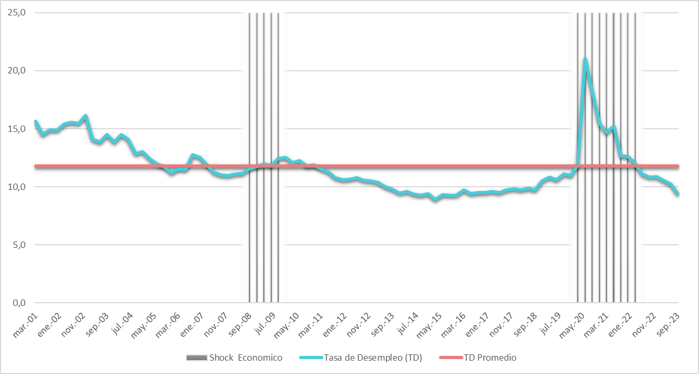

Proyecto Final de Practicas
Fricciones, Informalidad y Dinámica Laboral:
La Imperativa Necesidad de los Modelos de Búsqueda y Emparejamiento en el Análisis del Mercado Laboral Colombiano
Yuberley Cruz Caycedo
Practicante Banco de la República de Colombia
Asesora interna: Catalina Granda Carvajal
cgranda@banrep.gov.co, Investigadora senior Banco de la República
Asesora externa: Durfari Yanive Velandia Naranjo
dvelandian@unal.edu.co, Profesora Universidad Nacional
29 de Septiembre de 2025
Palabras claves: Mercado laboral colombiano; Modelos de búsqueda y emparejamiento; Fricciones en el mercado laboral; Informalidad laboral; Desempleo persistente.
JEL: J64; J21; J38; O17.
Introducción y Justificación del Problema
El funcionamiento del mercado laboral constituye uno de los temas más relevantes y persistentes en la macroeconomía contemporánea, especialmente en economías en desarrollo donde la informalidad y el desempleo estructural coexisten como rasgos dominantes (Otero Cortés et al. 2025; López y Salamanca 2019). En el caso colombiano, la dinámica del empleo ha mostrado una resistencia notable a los ciclos económicos, evidenciando la presencia de fricciones y segmentaciones que no pueden explicarse plenamente mediante los modelos neoclásicos de equilibrio walrasiano (Heijdra 2017). Este fenómeno ha motivado la búsqueda de enfoques alternativos capaces de capturar los mecanismos microeconómicos que subyacen a la creación, destrucción y reasignación de empleos en entornos con alta heterogeneidad productiva e institucional.
En este contexto, los modelos de búsqueda y emparejamiento —iniciados por Diamond (1982), (s. f.a), Pissarides (1985) y sistematizado posteriormente por Pissarides (2000)— han adquirido un papel central en la teoría moderna del desempleo. Estos modelos parten de la idea de que el desempleo no es resultado de rigideces de precios, sino de fricciones en el proceso de emparejamiento entre trabajadores y empresas. La existencia de costos de búsqueda, asimetrías de información y restricciones institucionales genera un equilibrio en el que coexisten vacantes no cubiertas y personas desempleadas, incluso en condiciones de competencia perfecta. Esta perspectiva permitió reformular la noción de equilibrio del mercado laboral y fundamentar la relación entre vacantes y desempleo conocida como curva de Beveridge (Rogerson, Shimer, y Wright 2005).
Sin embargo, a pesar de su éxito teórico y empírico en economías avanzadas, la aplicación del marco de Diamond, Mortensen y Pissarides (DMP) a economías en desarrollo plantea desafíos sustantivos Paz (2014). En países como Colombia, caracterizados por una elevada informalidad laboral, baja productividad y sistemas institucionales incompletos, la estructura del mercado dista significativamente del entorno de referencia de los modelos originales. En particular, la existencia de un sector informal endógeno modifica los incentivos tanto de trabajadores como de empresas, alterando la función de emparejamiento y las condiciones de equilibrio (Vera y Castro 2009). Esto sugiere la necesidad de adaptar el modelo de búsqueda y emparejamiento para reflejar los márgenes de elección relevantes en contextos duales, donde los agentes enfrentan la posibilidad de transitar entre empleo formal, informalidad y desempleo (Yashiv 2007).
El presente trabajo tiene como objetivo analizar la pertinencia teórica y empírica del modelo de búsqueda y emparejamiento aplicado al mercado laboral colombiano, incorporando la informalidad como un componente estructural y no como una mera falla de regulación. A diferencia de la literatura tradicional, el enfoque adoptado es cualitativo y explicativo, orientado a identificar los mecanismos que vinculan la dinámica de la informalidad, la duración del desempleo y los incentivos a la formalización dentro de un mismo marco de equilibrio general. Este esfuerzo no busca realizar calibraciones numéricas ni simulaciones cuantitativas, sino más bien ofrecer una base conceptual sólida para futuras extensiones empíricas o estructurales (Rogerson, Shimer, y Wright 2005; Mortensen y Pissarides 1994).
Metodológicamente, el estudio combina tres elementos: (i) una revisión crítica de la literatura teórica, enfatizando la evolución del paradigma DMP y sus extensiones hacia contextos no desarrollados; (ii) la construcción de un modelo analítico adaptado, en el que la decisión de participar en el sector formal o informal emerge endógenamente del equilibrio (véase Anexo~A para la derivación matemática); y (iii) el análisis de hechos estilizados del mercado laboral colombiano, obtenidos a partir de datos de la Gran Encuesta Integrada de Hogares (GEIH)del DANE y series de informalidad y desempleo (Departamento Administrativo Nacional de Estadística (DANE) 2023). Esta aproximación permite articular teoría y evidencia en torno a un mismo diagnóstico estructural.
Los resultados conceptuales y empíricos sugieren que la informalidad en Colombia no puede entenderse como un fenómeno residual o de exclusión, sino como un mecanismo de ajuste endógeno frente a la insuficiencia del sector formal para absorber la fuerza laboral disponible López y Salamanca (2019). Desde la perspectiva del modelo, el equilibrio resultante está determinado por la interacción entre la eficiencia de emparejamiento, el costo de búsqueda, el ingreso alternativo y el poder de negociación (Pissarides 2000; Yashiv 2007). En contextos de baja productividad y alta heterogeneidad, la informalidad emerge como un estado estable que amortigua los choques macroeconómicos, pero a costa de perpetuar un equilibrio de baja eficiencia.
El trabajo se organiza de la siguiente manera. La Sección 2 presenta el marco teórico del modelo de búsqueda y emparejamiento, resaltando sus fundamentos y principales extensiones según Mortensen y Pissarides (1994) y Rogerson, Shimer, y Wright (2005). La Sección 3 discute los desafíos de su aplicación en economías en desarrollo, con énfasis en el papel de la informalidad dadas por (s. f.b) y Grupo de Análisis del Mercado Laboral (Gamla) (2024). La Sección 4 integra la adaptación del modelo al caso colombiano, introduciendo las condiciones de equilibrio relevantes. La Sección 5 contrasta los resultados teóricos con hechos estilizados del mercado laboral, aportando evidencia cualitativa y empírica. Finalmente, la Sección 6 presenta las conclusiones y las implicaciones de política económica, enfatizando las lecciones estructurales para la formalización y la eficiencia del mercado de trabajo (Bassanini 2009).
La tasa de desempleo constituye uno de los indicadores más importantes y ampliamente analizados para evaluar la salud de una economía. Más allá de su nivel, su dinámica temporal —especialmente su tendencia a permanecer elevada tras un shock adverso — representa un rompecabezas para la teoría macroeconómica y un desafío persistentemente complejo para los hacedores de política. El marco neoclásico estándar, en su forma más pura, sostiene que el mercado laboral es eficiente, donde los salarios se ajustan de manera flexible para equilibrar la oferta y la demanda. Esto implica que, tras cualquier perturbación o choque, se logra un rápido retorno a una tasa de desempleo natural. Sin embargo, la evidencia empírica de diversas economías indica una realidad muy diferente. Esta discrepancia es la razón por la cual es fundamental presentar, en primera instancia, la evidencia empírica que permita una evaluación de la tasa de desempleo en Colombia.
Para el caso de Colombia, un mercado laboral caracterizado por su complejidad y por ser objeto de intenso debate y seguimiento por parte de instituciones como el Banco de la República, esta desconexión entre la teoría simple y la realidad es particularmente evidente. La Figura 1 evidencia cómo Colombia no es ajena a los efectos de las crisis económicas1, donde las fluctuaciones del desempleo durante estos choques son desafíos para los modelos laborales neoclásicos. En particular, durante la crisis del COVID-19, se observa un efecto inmediato que eleva la tasa de desempleo por encima del 20% en el tercer trimestre de 2020. Además, se evidencia que esta tasa tarda en regresar a niveles inferiores al promedio del 11.84%2, un proceso que puede llevar hasta siete trimestres (21 meses). Este hecho resalta la alta persistencia del desempleo, es decir, la falta de un ajuste rápido en la tasa. Otro acercamiento empírico realizado para esta investigación revela la magnitud de esta inercia. Al modelar la tasa de desempleo trimestral para el período 2001-2023 mediante un proceso autorregresivo de primer orden (AR(1))3 (ver Anexo B - Tabla Tabla 4 y Tabla 5), es posible calcular la vida media (half-life)4 de un shock al desempleo. El resultado para Colombia es de aproximadamente 4.1 trimestres.

Fuente: Elaboración propia con base en datos de la tasa de desempleo del DANE y el Banco de la República.
Nota 1: El área sombreada referente a shock hace referencia a la crisis económica del 2008 (crisis financiera global de 2008) y a la crisis económica del 2020 (recesión por pandemia COVID-19).
Este valor no es un mero dato estadístico; es la cuantificación del problema anterior. Implica que, tras un impacto económico que eleve el desempleo, se necesita más de un año para que tan solo la mitad de dicho efecto se disipe. El mercado laboral colombiano tiene memoria: los choques no son transitorios, sino que dejan una cicatriz duradera que se desvanece con una lentitud notable.
Esta marcada persistencia presenta una anomalía empírica significativa para un marco teórico que asume un ajuste instantáneo y sin costos. La observación de que el desempleo no revierte rápidamente a su media sugiere la existencia de impedimentos estructurales, o fricciones, que ralentizan el proceso de emparejamiento entre trabajadores que buscan empleo y empresas que ofrecen vacantes (lo cual analizamos mediante indicadores complementarios en las figuras Figura 2 y Figura 3). Por lo tanto, el rompecabezas de la persistencia del desempleo en Colombia constituye el punto de partida empírico de esta investigación, la cual argumenta que para comprender la dinámica laboral del país y diseñar políticas efectivas, es imperativo adoptar modelos que incorporen explícitamente estas fricciones como elemento central de su análisis.
Análisis del Desempleo
.png)

Fuente: Elaboración propia con base en datos del DANE y el Banco de la República.
Nota 1: El área sombreada hace referencia a la crisis económica del 2020 (recesión por pandemia COVID-19). Se toma como periodo de pandemia desde marzo del 2020 a mayo del 2021.
Nota 2: Los datos trabajados fueron desestacionalizados y emparejados con su respectivo factor de expansión ajustados por cambio del marco muestral del DANE (año 2018). Se hace una comparación entre los datos a nivel nacional y el marco de 23 ciudades implementada por el DANE.
El análisis de la gráfica Figura 1 se complementa con el estudio del desempleo de muy larga duración (Subgráfico Figura 2) y de la estructura y rigidez del desempleo (Subgráfico Figura 3). El primero, como indicador de volatilidad y concentración, muestra que antes de 2020 el desempleo de larga duración era bastante estable, con menos divergencia entre el desempleo nacional y el urbano. La interpretación de las fricciones del desempleo de larga duración en la postpandemia indica que el choque incrementó los costos de búsqueda (tiempo, información, habilidades), siendo más pronunciado en áreas urbanas debido a la mayor competencia, desalineación de habilidades y cambios estructurales —interpretación que es acorde a las premisas dadas por el factor de vida media del desempleo—. la segunda gráfica (Subgráficos Figura 3) señala que durante la mayor parte de 2010-2019, la proporción (fracción del total de desempleo que es de muy larga duración) se mantiene relativamente estable y por debajo de picos recientes. Desde 2020 en adelante, hay aumentos notables especialmente en las ciudades, y luego una estabilización con fluctuaciones prolongadas.
A partir de las dos gráficas juntas, se observa que los costos de búsqueda y la rigidez del desempleo se intensificaron tras 2020: el (Subgráfico (Figura 2)) muestra un aumento en la proporción de desempleados que llevan más de 12 meses buscando, lo que indica mayores costos de búsqueda, desalineación de habilidades y posible desánimo, espejo de histéresis en el mercado laboral. Aunque la Magnitud de Desempleo de Larga Duración (Subgráfico Figura 2) es mayor en las ciudades y se enciende con fuerza tras la pandemia, la fricción de búsqueda se expande también a nivel nacional, sugiriendo que las políticas deben combinar enfoques urbanos con una red de apoyo a nivel nacional. En este marco, las intervenciones deben priorizar la reconversión y actualización de habilidades, servicios de intermediación laboral y reducción de costos de búsqueda (transporte, horarios flexibles, asesoría), poniendo énfasis en las áreas urbanas pero con estándares y redes que permitan escalabilidad (discusión que se profundiza en la sección 5). Lo anterior complementa y ampliar las discusión sobre la rigidezes que se presentan en el mercado laboral colombiano, particularmente en el sector del desempleo.
Limitaciones de los Modelos Neoclásicos y la Emergencia de los Modelos de Búsqueda y Emparejamiento
La persistencia del desempleo cuantificada en la sección anterior no es una mera curiosidad estadística; representa un desafío fundamental para el modelo de competencia perfecta del mercado laboral. Dicho marco neoclásico, si bien es un pilar de la formación económica, se fundamenta en el supuesto de un subastador walrasiano5 que asegura el vaciamiento instantáneo de los mercados. En este mundo idealizado, las principales anomalías empíricas del mercado laboral, como la observada para Colombia, son difíciles, si no imposibles, de reconciliar.
Las limitaciones del enfoque neoclásico se manifiestan en al menos tres áreas cruciales. En primer lugar, es incapaz de generar la alta persistencia del desempleo que observamos. Un shock adverso debería, en teoría, provocar un ajuste a la baja en los salarios reales, eliminando rápidamente el exceso de oferta de trabajo. La vida media de 4.1 trimestres en Colombia contradice frontalmente esta predicción. En segundo lugar, el modelo no puede explicar la coexistencia simultánea de trabajadores desempleados y vacantes de empleo sin cubrir. Si el mercado se ajusta sin fricciones, una empresa con un puesto disponible debería poder contratar a un trabajador cualificado de forma inmediata. La realidad de procesos de contratación largos y costosos queda fuera del alcance del modelo.
Finalmente, el marco neoclásico es un modelo de flujos netos, permaneciendo ciego a la inmensa dinámica de flujos brutos que yace bajo la superficie. La tasa de desempleo que observamos es solo la punta del iceberg; oculta la masiva creación y destrucción simultánea de empleos que ocurre cada mes. Esta dinámica, denominada fluidez laboral, es un componente central del funcionamiento del mercado que el modelo neoclásico simplemente ignora (Otero Cortés et al. 2025).
Frente a estas falencias, emerge a partir de las últimas décadas del siglo XX un nuevo paradigma: los modelos de Búsqueda y Emparejamiento (Search and Matching). La intuición fundamental de este enfoque, también conocido como el marco DMP por sus pioneros Diamond, Mortensen y Pissarides, es tan simple como poderosa: encontrar un socio comercial —sea un empleado para una empresa o un empleo para un trabajador— es un proceso costoso y que consume tiempo (Diamond 1982; s. f.a; Pissarides 1985). El mercado laboral no es un mercado centralizado, sino uno descentralizado y plagado de fricciones por información imperfecta, heterogeneidad de habilidades y localización geográfica.
Este marco teórico aborda directamente las limitaciones mencionadas. La persistencia del desempleo surge naturalmente porque el proceso de búsqueda es lento. La coexistencia de desempleados y vacantes es el punto de partida del modelo, no una anomalía. Y, fundamentalmente, es un modelo intrínsecamente dinámico de flujos laborales, diseñado para analizar la creación y destrucción de empleos. Más allá de la eficiencia económica, entender estas fricciones es crucial desde una perspectiva de bienestar. Como argumenta Heijdra (2017), el desempleo prolongado impone enormes costos psíquicos a los individuos y sus familias, lo que subraya la urgencia de políticas de empleo efectivas que estos modelos más realistas pueden ayudar a diseñar. Por su capacidad para explicar estos hechos estilizados clave, el enfoque de búsqueda se ha consolidado como el marco estándar para el análisis moderno del mercado de trabajo (Rogerson, Shimer, y Wright 2005; Yashiv 2007).
Objetivos de la Investigación
En virtud de las anomalías empíricas y las limitaciones teóricas expuestas, la presente investigación persigue un objetivo general claro: demostrar la imperativa necesidad de utilizar modelos de búsqueda y emparejamiento (DMP) para un análisis riguroso y relevante del mercado laboral colombiano. Se argumentará que este marco no solo es superior para explicar los hechos estilizados del país, como la persistencia del desempleo y la dinámica de los flujos laborales, sino que su flexibilidad inherente permite incorporar características estructurales de primer orden, como la extendida informalidad, que son ineludibles para cualquier estudio serio del caso colombiano.
Para la consecución de este objetivo principal, se desprende una serie de objetivos específicos que estructuran el desarrollo de este trabajo:
Caracterizar sistemáticamente las fricciones del mercado laboral colombiano a través del análisis de hechos estilizados clave. Esto incluye la cuantificación de la persistencia del desempleo, el estudio del comovimiento cíclico del desempleo y la informalidad con el producto, y el análisis de la fluidez laboral, con el fin de establecer una base empírica sólida que motive la elección del marco teórico.
Analizar cómo el marco DMP se adapta para incorporar la dualidad formal-informal característica de economías emergentes. Se examinará cómo la inclusión de un sector informal modifica los componentes centrales del modelo —los estados de los agentes, la estructura del mercado y las decisiones de creación y destrucción de empleo—, utilizando como referencia las adaptaciones realizadas para la economía colombiana.
Ejemplificar el poder analítico del modelo de búsqueda y emparejamiento adaptado para evaluar políticas laborales de alta relevancia para Colombia. Se explorará cómo esta herramienta teórica permite simular y comprender los efectos de la regulación sobre los impuestos a la nómina y los costos de despido en una economía con un mercado laboral dual.
| Categoría | Métrica | Unidad | Pre-Pandemia (2010-2020) | Post-Pandemia (2020-2025) | Diferencia |
|---|---|---|---|---|---|
| 1. Magnitud | Tasa de Informalidad (Nacional, SS) | % | 58.85 | 54.67 | -4.18 p.p. |
| Personas Informales (Nacional, SS) | Millones | 11.98 | 11.87 | -0.11 | |
| Personas Informales (Nacional, EP) | Millones | 12.40 | 12.10 | -0.30 | |
| 2. Brechas de Género | Tasa Desempleo (Mujer) | % | 13.37 | 15.38 | +2.01 p.p. |
| Tasa Desempleo (Hombre) | % | 7.86 | 9.79 | +1.93 p.p. | |
| Tasa Informalidad (Mujer) | % | 58.79 | 52.68 | -6.10 p.p. | |
| Tasa Informalidad (Hombre) | % | 58.90 | 56.66 | -2.24 p.p. | |
| 3. Costos de Búsqueda | Desempleo > 12 Meses (Nacional) | Miles | 153.1 | 280.7 | +127.6 |
| % Desempleo > 12 Meses (Nacional) | % | 6.81 | 9.87 | +3.06 p.p. |
Fuente: Cálculos propios con base en GEIH (DANE).
Nota: SS se refiere a la medición por afiliación a seguridad social. EP se refiere a la medición por enfoque productivo. Las diferencias están expresadas en p.p. (puntos porcentuales).
La Tabla Tabla 1 revela una leve reducción en los niveles agregados de informalidad, aunque su magnitud absoluta, cercana a los 12 millones de personas, mantiene su carácter de estado de equilibrio persistente en lugar de un fenómeno transitorio. Esta dualidad es crucial para entender la opción de reserva que podrían tener los trabajadores en el mercado laboral colombiano (dentro del modelo de búsqueda y emparejamiento). El cambio más notable se encuentra en la persistencia del desempleo, donde el número de personas desempleadas durante más de 12 meses casi se ha duplicado, incrementándose de un promedio de 153 mil a 280 mil. Este aumento de 127 mil personas estancadas en la búsqueda de empleo indica fricciones severas en el mercado laboral, donde la duración de la búsqueda se convierte en un costo real y creciente.
Además de estos datos agregados, se observa una profunda heterogeneidad en el mercado laboral. Los costos de búsqueda varían sistemáticamente según el nivel educativo, lo que sugiere una segmentación en el mercado laboral. Esta diferenciación implica que no hay eficiencia (por lo menos es muy baja) en el emparejamiento entre trabajadores de alta y baja cualificación. Este aspecto es significativo, ya que nos indica que el mercado laboral no se vacia, y la duración de búsqueda es un costo real y creciente.
Dinámica Cíclica del Desempleo y la Informalidad
Más allá de la persistencia intrínseca del desempleo, la naturaleza cíclica del mercado laboral colombiano, y en particular la interacción entre la tasa de desempleo, la tasa de informalidad y el ciclo económico, proporciona evidencia adicional de la existencia de fricciones y la necesidad de un marco de modelado más sofisticado. Los modelos neoclásicos suelen predecir que, en respuesta a un choque negativo de productividad o demanda, la disminución del PIB se traduciría en una reducción de la demanda de trabajo y, por ende, en un aumento del desempleo que sería transitorio debido a ajustes salariales. Sin embargo, la inclusión de la informalidad, una característica estructural predominante en economías emergentes como la colombiana, revela una dinámica más compleja.
Para cuantificar estas relaciones, se ha analizado el comovimiento de la tasa de desempleo (TD) y la tasa de informalidad (TI) con el componente cíclico del Producto Interno Bruto (PIB), utilizando el filtro de Hodrick-Prescott6 para aislar las fluctuaciones de corto plazo. Los resultados de las correlaciones contemporáneas para el período de estudio se presentan en la Tabla Tabla 2:
| Variables | Desviación estándar | Desviación relativa/PIB | Corre con el PIB |
|---|---|---|---|
| PIB | 0.018919888 | 1 | 1 |
| Tasa Desempleo | 0.01022232 | 0.540294974 | -0.877792179 |
| Tasa de informalidad | 0.008371023 | 0.4424457 | -0.616976175 |
Fuente: Elaboración propia a partir de datos tomados del Departamento Administrativo Nacional de Estadística (DANE) y Banco de la República.
Nota 1: Esta tabla presenta las desviaciones estándar cíclicas de diferentes variables económicas entre el tercer trimestre de 2001 y el tercer trimestre de 2022. Se utilizó la metodología de Filtro de Hodrick-Prescott de descomposición de series de tiempo. La columna Desviación Estándar muestra la volatilidad de cada variable, mientras que Desviación relativa/PIB utiliza al PIB como base para mostrar la relación de volatilidades entre las variables.
Nota 2: Esta tabla proporciona las correlaciones entre el PIB con otras variables económicas como la tasa de desempleo y la tasa de informalidad. Las correlaciones se presentan para cada combinación de ciclos y pueden indicar relaciones entre la evolución de estas variables a lo largo del tiempo.
Los datos de la Tabla Tabla 2 revelan hallazgos contundentes. En primer lugar, la tasa de desempleo (TD) exhibe una correlación negativa muy fuerte con el PIB cíclico, con un valor de -0.87. Esto confirma el patrón esperado: cuando la economía se desacelera o entra en recesión (PIB cíclico negativo), el desempleo tiende a aumentar marcadamente. Esta magnitud de correlación subraya la estrecha relación entre la actividad económica y el estado del empleo. Sin embargo, la persistencia discutida en la sección 1.1 (el half-life de 4.1 trimestres) implica que este aumento no se disipa rápidamente una vez que el PIB comienza a recuperarse, lo que sugiere la presencia de mecanismos que impiden un ajuste instantáneo.
La tasa de informalidad (TI) en Colombia presenta una correlación negativa con el PIB cíclico, aunque de menor magnitud (-0.61) en comparación con el desempleo, lo que sugiere que, en períodos de desaceleración económica, la informalidad también tiende a aumentar o mantenerse elevada, interpretándose de varias maneras en el contexto de fricciones. En un entorno de menor demanda en el sector formal, los trabajadores que pierden empleos formales o los nuevos integrantes de la fuerza laboral podrían acceder más fácilmente a empleos informales, caracterizados por menores barreras de entrada y costos de búsqueda, funcionando así la informalidad como un colchón o refugio que mitiga un aumento en la tasa de desempleo formal . Además, existen diferentes grados de fricciones en el mercado laboral, donde el sector formal enfrenta mayores costos de búsqueda y emparejamiento, salarios rígidos y regulación laboral que dificultan los ajustes, mientras que el sector informal permite una mayor fluidez en tiempos de crisis. Por último, la coexistencia y comovimiento del desempleo y la informalidad indican que los agentes no solo eligen entre estar empleados (en el sector formal) o desempleados, sino que también consideran la opción de la informalidad, añadiendo complejidad a las decisiones de búsqueda de empleo y a la creación de vacantes por parte de las empresas, una dinámica que los modelos de búsqueda y emparejamiento están diseñados para capturar.
Estos patrones cíclicos, donde el desempleo y la informalidad coexisten y responden al ciclo económico de manera diferenciada, refuerzan la idea de que el mercado laboral no es un mercado walrasiano perfectamente competitivo. La persistencia del desempleo, junto con la dinámica de la informalidad como una vía de ajuste alternativa, no puede ser explicada sin incorporar explícitamente las fricciones de búsqueda y emparejamiento. Estos hechos estilizados son precisamente lo que los modelos de búsqueda y emparejamiento buscan modelar, al permitir que el desempleo y la asignación entre sectores (formal/informal) sean resultados de equilibrio generados por las ineficiencias en el proceso de búsqueda y las diferencias regulatorias.
La Fluidez Laboral en Colombia
Habiendo analizado la dinámica cíclica de las tasas de desempleo e informalidad en relación con el PIB, es fundamental levantar el velo y examinar los flujos que los determinan. Como se adelantó en la introducción, la tasa de desempleo es solo la punta del iceberg; bajo su aparente calma o lenta variación se esconde una masiva y constante reasignación de trabajadores entre empleos y estados de actividad. Esta dinámica subyacente, denominada fluidez laboral, se refiere a la magnitud de la creación y destrucción de empleos, así como de las contrataciones y separaciones que ocurren en un período determinado. El estudio de estos flujos brutos no es un mero detalle técnico, sino una pieza central para entender la naturaleza de las fricciones en el mercado.
El trabajo de Otero Cortés et al. (2025), utilizando un robusto conjunto de datos administrativos7 enlazados de empleadores y empleados para el sector formal colombiano, ofrece una caracterización detallada de esta dinámica y arroja luz directamente sobre las limitaciones del marco neoclásico. Su primer hallazgo fundamental son las magnitudes de los flujos brutos. Lejos de la imagen de un mercado estático, los datos revelan una enorme rotación (churning) que los agregados netos ocultan. Por ejemplo, para el período de estudio (2008-2014), el flujo promedio de trabajadores contratados fue de 507,000 al mes, mientras que en el mismo período solo se crearon, en promedio, 265,000 nuevos puestos de trabajo. Esto implica que aproximadamente el 52% de todas las contrataciones no correspondían a nuevos empleos, sino a reemplazar trabajadores que habían dejado sus puestos. De manera simétrica, de las 477,000 desvinculaciones mensuales promedio, solo el 51% (234,000) se debían a la destrucción real de puestos de trabajo (Morales y Medina, 2019).
Estos números demuestran de forma contundente que el mercado laboral colombiano es un sistema en ebullición constante, con una reasignación de personal que duplica la reasignación neta de empleos. Este fenómeno es incompatible con un modelo sin fricciones, donde los recursos se moverían de forma instantánea y sin costo desde empleos en declive hacia empleos en auge. La existencia de una rotación tan elevada es, en sí misma, una prueba de que el mercado opera a través de un complejo proceso de búsqueda y emparejamiento. Quizás el hallazgo más contundente de Otero Cortés et al. (2025) para la justificación de esta investigación es la evidencia empírica de una relación positiva robusta entre la fluidez laboral (como la tasa de reasignación de trabajadores8, la tasa de reasignación de empleos9 y la tasa de rotación10) y la tasa de empleo formal11, y entre la fluidez laboral y la tasa de ocupación formal12. Más allá de una simple correlación visual, los autores realizan estimaciones econométricas13 para medir el impacto preciso. Sus resultados son notables: tras controlar por diversas variables14, concluyen que un aumento de 1 punto porcentual (p. p.) en las tasas de fluidez está asociado con el aumento de entre 0,21 y 0,36 puntos porcentuales (p. p.) de la tasa de empleo formal y de una aumento de entre 0.17 y 0.24 puntos porcentuales (p. p.) de la tasa de ocupación (Otero Cortés et al. 2025).
Este hallazgo empírico se alinea perfectamente con las predicciones de los modelos teóricos de búsqueda, los cuales postulan que los factores que aumentan la fluidez, al reducir los costos de búsqueda, deben llevar a una mayor tasa de ocupación de equilibrio y por consiguiente una menor tasa de desocupación de equilibrio (Pissarides 2000). Estos coeficientes estimados son la prueba definitiva de la hipótesis del mercado fluido en Colombia. La implicación de este resultado es profunda: un mercado laboral rígido o con baja fluidez, donde los procesos de contratación y separación son lentos y costosos, es un mercado ineficiente que conduce a un mayor desempleo estructural. En un entorno así, los trabajadores que pierden su empleo tardan más en encontrar uno nuevo, y las empresas tardan más en llenar sus vacantes. Por lo tanto, no es la destrucción de empleos en si mismo lo que determina el nivel de desempleo, sino la eficiencia con la que el mercado reasigna a los trabajadores desplazados hacia nuevos puestos productivos.
En síntesis, la evidencia cuantitativa sobre la fluidez laboral en Colombia complementa y refuerza los hallazgos anteriores. La persistencia del desempleo (sección 1.1) y la dinámica cíclica de la informalidad (sección 2.1) son los síntomas visibles de un problema subyacente: un mercado laboral con fricciones significativas que obstaculizan un emparejamiento eficiente. El análisis de los flujos de Otero Cortés et al. (2025) nos permite diagnosticar la enfermedad misma, demostrando que la falta de dinamismo está directamente correlacionada con mayores niveles de desempleo. Estos tres hechos estilizados, en conjunto, forman una base empírica sólida que no solo invalida el enfoque neoclásico, sino que exige la adopción de un marco teórico —como el de Búsqueda y Emparejamiento— diseñado explícitamente para modelar estos flujos y fricciones.
El Marco Teórico: Modelos de Búsqueda y Emparejamiento (DMP) y sus Extensiones
Tras haber establecido la evidencia empírica de fricciones profundas en el mercado laboral de Colombia en las secciones anteriores, se procede a desarrollar el marco teórico de los modelos de Búsqueda y Emparejamiento (DMP), ya que este ha surgido precisamente para analizar estas fricciones. En la sección 3.1 se presentan los fundamentos canónicos, en su versión de tiempo continuo, para establecer una base conceptual solida. También se debe aclarar que este se puede presentar en su forma discreta, pero no se hace por la comodidad que da el seguir el proceso llevado en el articulo de Yashiv (2007), que lo modela en su forma continua. El objetivo no es realizar derivaciones matemáticas exhaustivas, sino comentar la funcionalidad y la intuición económica detrás de cada una de sus ecuaciones principales.
Fundamentos del Modelo DMP Canónico
El modelo DMP concibe el mercado laboral no como un mercado centralizado y sin fricciones, sino como un entorno descentralizado donde el encuentro entre empresas con vacantes y trabajadores desempleados es un proceso costoso y que consume tiempo. Los componentes que se describen a continuación son los pilares de este enfoque. En el anexo A.1 se formalizan los supuestos iniciales del modelo.
Función de Emparejamiento (Matching Function)
Yashiv (2007) define la función de emparejamiento como el corazón del modelo, en esta se describe la tecnología que permite la producción de empleo. Postulan que el número de nuevos emparejamientos o contrataciones por periodo; \(m\), es una funcione del número de trabajadores desempleados que buscan activamente, \(u\), y del número de vacantes que las empresa publican, \(v\). Esta ecuación viene dada por unos supuesto y características básicas, pero que mas adelante y sobre todo en modelo presentado por Grupo de Análisis del Mercado Laboral (Gamla) (2024) para la economía colombiana se vuelven mas inflexibles.
\[m=m(u,v)\] Esta función captura la esencia de las fricciones de búsqueda. A diferencia del modelo neoclásico, no todas las vacantes se llenan ni todos los desempleados encuentran trabajo instantáneamente. La eficiencia de este proceso depende de la densidad de ambos lados del mercado. Comúnmente se especifica como una función Cobb-Douglas con rendimientos constantes a escala15: \(m(u,v)=Au^{\eta}v^{1-\eta}\), donde \(A\) es un parámetro de eficiencia de la tecnología de búsqueda y \(\eta\) es la elasticidad de los emparejamientos respecto a los desempleados. Esta ecuación lleva agregado un parámetro que recoge la intensidad de búsqueda \(s\)16, pero por simplicidad Yashiv (2007) normaliza (\(s=1\)).
Es a partir de esta función que se derivan dos probabilidades (tasas de llegada) cruciales. La tasa de llegada de empleos, \(p(\theta)\), es la probabilidad por unidad de tiempo de que un trabajador desempleado encuentre un empleo, y se define como \(p(\theta)=m/u=m(1,v/u)=m(1,\theta)\). Por otro lado, la tasa de llegada de trabajadores, \(q(\theta)\), representa la probabilidad por unidad de tiempo de que una empresa llene una vacante, definida como \(q(\theta)=m/v=m(u/v,1)=m(1/\theta,1)\). Aquí, \(\theta=v/u\) es la estrechez laboral (tensión del mercado), una variable central que mide la relación entre vacantes y desempleados. Si \(\theta\) es alta, el mercado está tenso, es decir, hay muchas vacantes por cada buscador, lo que facilita que los trabajadores encuentren empleo (\(p(\theta)\) es alta) pero dificulta que las empresas llenen sus puestos (\(q(\theta)\) es baja), y viceversa. La deducción formal de la función de emparejamiento y las tasas de encuentro y llenado se presenta en el Anexo A (véanse desde la Ecuación 7 hasta la Ecuación 10).
La aparente simplicidad de la función de emparejamiento oculta un profundo resultado sobre la eficiencia del equilibrio descentralizado. Cada vez que un agente (empresa o trabajador) decide entrar al mercado a buscar, impone, sin quererlo, externalidades sobre todos los demás participantes. La primera de esta externalidad es la de congestión (negativa), que se presenta cuando una empresa adicional publica una vacante, provocando una mayor competencia con las demás empresas por el mismo conjunto de trabajadores desempleados, reduciendo la probabilidad de que las otras empresas llenen sus vacantes (una \(q(\theta)\) más baja para todas). De forma simétrica, cuando un trabajador más se une a la búsqueda de empleo, compite con los demás trabajadores, reduciendo la probabilidad de que otros encuentren un empleo (una \(p(\theta)\) más baja para todos). Los agentes no internalizan el costo que imponen a sus pares. La otra externalidad que se presenta es la de búsqueda positiva, donde la llegada de una empresa a un economía puede general un shock positivo de vacantes que benefician a toda la población desempleada. En una forma resumida Yashiv (2007), recoge los efectos de estas externalidades a través del aumento o la disminución de la probabilidades, así, \(p(\theta)\) disminuye con \(u\) y \(q(\theta)\) disminuye con \(v\) cuando se presenta una externalidad de congestión (negativa), mientras que \(q(\theta)\) aumenta con \(u\) y \(p(\theta)\) aumenta con \(v\) cuando se presenta una externalidad de búsqueda.
El equilibrio del mercado, dejado a su suerte, no tiene por qué ser socialmente óptimo. La pregunta clave es: ¿se cancelan estas externalidades? La teoría Hosios (1990) establece una condición de eficiencia conocida como la Condición de Hosios, la cual postula que el equilibrio descentralizado es eficiente si y solo si el poder de negociación del trabajador (\(\beta\), que definiremos más adelante) es exactamente igual a la elasticidad de la función de emparejamiento con respecto al desempleo (\(\eta\)). Sí \(\beta=\eta\), los incentivos privados para crear vacantes se alinean con el óptimo social. Si la condición no se cumple, el mercado generará un nivel ineficiente de desempleo y vacantes.
Al aplicar el marco teórico de emparejamiento (DMP) a la coyuntura laboral colombiana, las externalidades de congestión se manifiestan con una intensidad que revela un profundo desequilibrio de poder. La congestión que enfrenta un trabajador común17 en su búsqueda de empleo es severa: el universo de competidores por una vacante formal no se limita a la tasa de desempleo oficial, que para abril de 2025 se ubicaba en un 8.8%, sino que se ve masivamente amplificado por una tasa de informalidad nacional del 56.3% (DANE, 2025). Esto significa que por cada puesto formal disponible, compite un enorme contingente de trabajadores —desempleados y subempleados en la informalidad—, lo que reduce drásticamente la probabilidad individual de encontrar un empleo de calidad. Este exceso crónico de oferta laboral deprime sistemáticamente el poder de negociación de los trabajadores (\(\beta\)).
Otro ingrediente a tener en cuenta es la negociación anual del salario mínimo. Que es la principal plataforma de incidencia para los sindicatos, pero que se puede revelar como un poder real acotado. Lo anterior es debido a que la tasa de sindicalización es apenas de un 4.5% (Otálora 2024), su representatividad es cuestionada, y su poder de negociación se ve diluido por la amenaza del decreto gubernamental que puede fijar el aumento unilateralmente si no hay acuerdo por el incremento del salario minimo, una facultad establecida por la Ley 278 de 199618. El resultado es un incremento salarial que, incluso cuando es concertado, funciona más como un ancla influenciada por la inflación que como un reflejo del poder de negociación real de los trabajadores. En este escenario, la verdadera opción de afuera para la mayoría no es un seguro de desempleo robusto, sino un precario puesto en el sector informal, obligándolos a aceptar condiciones menos favorables que en la formalidad19.
Este desequilibrio estructural tiene una implicación directa y contundente: hace altamente improbable que la Condición de Hosios (\(\beta=\eta\)), un pilar del modelo DMP, se cumpla en la práctica. Dado el poder de negociación de los trabajadores (\(\beta\)), tan evidentemente constreñido, es casi una certeza que este sea inferior a su contribución a la eficiencia del emparejamiento (\(\eta\)), generando una ineficiencia del tipo \(\beta<\eta\). La teoría predice precisamente el resultado observable en Colombia: las empresas, al capturar una porción del excedente del emparejamiento mayor a la socialmente óptima, tienen un incentivo perverso para favorecer una estrategia de creación de un alto volumen de vacantes de baja calidad y alta rotación. Saben que la severa congestión del lado de los trabajadores garantiza una altísima probabilidad de llenar esos puestos sin necesidad de invertir en salarios o condiciones superiores.
Las Ecuaciones de Valor (Bellman)
El modelo emplea programación dinámica para determinar el valor económico de cada estado que enfrentan empresas y trabajadores en el ámbito laboral. La explicación de las Ecuaciones de Valor en el contexto del modelo de búsqueda y emparejamiento, basado en el enfoque de Bellman, puede ampliarse a partir de la formulación matemática de los retornos necesarios para ambos agentes. A continuación se presentará las ecuaciones de valor para cada agente (empresas y trabajadores), se hará una interpretación de cada una y se terminará con la discusión de estas bajo el contexto laboral colombiano. Se debe resaltar que se hace una ampliación de la derivación de estas ecuaciones de valor de los agentes en el Anexo~A (véanse Ecuación 11 y Ecuación 13).
Ecuaciones para las Empresas
- Ecuación del Valor de un Puesto de Trabajo Ocupado:
\[rJ = y - w + s(J - V)\]
Variables:
\(y\): Productividad del trabajador.
\(w\): Salario pagado al trabajador.
\(s\): Tasa de destrucción del empleo (probabilidad de que el puesto de trabajo se pierda).
\(J\): Valor de un puesto de trabajo ocupado.
\(V\): Valor de un puesto de trabajo vacante.
Interpretación: La ecuación establece que el retorno requerido sobre un puesto de trabajo ocupado (\(rJ\)) es igual al beneficio neto de mantener al trabajador. Este beneficio se calcula restando el salario que se paga al trabajador de la productividad generada por este (\(y - w\)). Además, se añade el costo esperado asociado a la probabilidad de que el puesto se destruya (\(s(J - V)\)), que representa la pérdida de valor cuando un trabajador abandona o pierde el empleo.
- Ecuación del Valor de un Puesto de Trabajo Vacante:
Variables:
\(k\): Costo de mantener una vacante abierta.
\(q(\theta)\): Tasa de llenado de vacantes, que depende de la economía (representada por \(\theta\)).
\(J\) y \(V\): Valores ya definidos anteriormente.
Interpretación: Aquí, el retorno requerido sobre una vacante (\(rV\)) se representa como el costo de mantenerla abierta (\(-k\)), más el valor esperado de llenar la vacante (evaluado como \(q(\theta)(J - V)\), donde \(q(\theta)\) es la probabilidad de que se llena la vacante). Esto sugiere que las empresas sopesan el costo de no llenar la vacante frente al potencial beneficio de llenarla.
Ecuaciones para los Trabajadores
- Ecuación del Valor de Estar Empleado:
\[rE = w + s(E - U)\]
Variables:
- \(E\): Valor de estar empleado.
- \(U\): Valor de estar desempleado.
- \(s\): Probabilidad de perder el empleo.
Interpretación: El retorno requerido para estar empleado, \(rE\), es la suma del salario recibido (\(w\)) y una compensación adicional que depende de la diferencia entre el valor de estar empleado y el valor de estar desempleado, \(s(E - U)\). Este término captura el costo o beneficio esperado asociado a la estabilidad laboral: si \(E > U\), hay una ganancia adicional esperada por mantener el empleo; si \(E < U\), hay un costo adicional debido a la mayor desventaja de estar empleado frente a desempleado. El tamaño de este ajuste está determinado por \(s\), que representa la probabilidad o el peso del costo/beneficio asociado a esa diferencia.
- Ecuación del Valor de Estar Desempleado:
\[rU = z + p(\theta)(E - U)\]
Variables:
\(z\): Valor del ocio o ingreso durante el desempleo.
\(p(\theta)\): Probabilidad de encontrar empleo, también dependiente del estado del mercado laboral (\(\theta\)).
Interpretación: El retorno requerido de estar desempleado (\(rU\)) incluye la compensación inmediata que se recibe del ocio o del ingreso durante el desempleo (\(z\)), más la renta esperada derivada de las oportunidades de encontrar un empleo (\(p(\theta)(E - U)\)). Esto muestra el riesgo y la oportunidad que enfrentan los trabajadores en el mercado laboral.
Desde la perspectiva de la empresa, estas ecuaciones de valor, si bien son teóricamente elegantes, deben ser interpretadas a la luz de los altos costos no salariales que caracterizan al mercado formal colombiano. Para una firma en Colombia, el costo de un trabajador (\(w\)) en la ecuación del valor de un puesto ocupado (\(rJ\)) no es simplemente el salario nominal, sino el salario más la considerable carga de los aportes parafiscales y a la seguridad social. Esto implica que la productividad (\(y\)) de un trabajador debe ser significativamente alta para que el beneficio neto (\(y - w\)) sea positivo y justifique la creación de un empleo formal. En contraparte, la ecuación del valor de una vacante (\(rV\)) revela una de las tensiones del mercado: aunque el costo de búsqueda (\(k\)) puede ser relativamente bajo y la probabilidad de llenar la vacante (\(q(\theta)\)) alta debido al gran número de buscadores, es el alto costo recurrente del puesto una vez ocupado lo que frena la creación de empleo formal y empuja a muchas empresas, especialmente las más pequeñas, a operar en la informalidad, alterando fundamentalmente su decisión de entrada al mercado.
El análisis se vuelve aún más crítico al examinar las ecuaciones de valor del trabajador, donde el modelo canónico muestra su mayor debilidad para un país como Colombia. La ecuación del valor de estar desempleado (\(rU = z + p(\theta)(E - U)\)) es particularmente problemática. La variable \(z\), que en el modelo representa los beneficios de desempleo o el valor del ocio, es una abstracción que no captura la realidad de la mayoría de la población colombiana. El seguro de desempleo formal tiene una cobertura y duración limitadas, por lo que para un trabajador que pierde su empleo, la opción real no es recibir un ingreso pasivo, sino ingresar al sector informal para generar un ingreso de subsistencia. Por lo tanto, el valor \(z\) no es el valor del ocio, sino el valor esperado de una ocupación en él rebusque. Esto redefine por completo la decisión del trabajador: su opción de afuera no es el desempleo, sino la informalidad. Esto implica que el verdadero valor del desempleo (\(U\)) en Colombia es, en la práctica, el valor de la transición hacia un estado de informalidad, un tercer estado que este modelo canónico ignora y que es esencial para entender las decisiones de los agentes y la dinámica del mercado laboral en su totalidad.
La Condición de Creación de Empleo
La condición de creación de empleo, también conocida como la condición de entrada libre (Free-Entry Condition), es esencial para entender cómo las empresas toman decisiones en el contexto del equilibrio en el mercado laboral. En equilibrio, las empresas publicarán vacantes hasta el punto en que ya no sea rentable hacerlo20. Esto implica que el valor de una vacante se reduce a cero. Es por la anterior, que se desglosara esta condición a partir de componentes teóricos.
La ecuación que se plantea viene dada a partir de sustituir \(V=0\) en las ecuaciones de valor de la empresa, donde se obtiene la condición fundamental de creación de empleo:
\[ \frac{k}{q(\theta)} = J = \frac{r + s}{y - w} \]
El lado izquierdo21, \(\frac{k}{q(\theta)}\), representa el costo esperado de contratar a un trabajador (el costo de mantener la vacante \(k\) dividido por la probabilidad de llenarla \(q(\theta)\)). El lado derecho22, \(J\), es el valor presente descontado de las ganancias de un puesto ocupado. La ecuación establece que, en equilibrio, el costo de contratar debe ser igual al beneficio esperado. Esta condición determina la tensión de mercado de equilibrio (estrechez), \(\theta\).
La anterior condición de equilibrio significa que el mercado alcanza un estado en el que las empresas están dispuestas a crear nuevas vacantes únicamente hasta el punto en que el costo de hacerlo no supera el beneficio esperado; así, sí \(\frac{k}{q(\theta)} > J\), las empresas no están incentivadas a crear más vacantes debido a que el costo de contratar supera el beneficio esperado, mientras que si, \(\frac{k}{q(\theta)} < J\), las empresas encontrarían rentable crear más vacantes, lo que conduciría a una mayor contratación. La demostración algebraica de la condición de creación de empleo y la ecuación salarial de Nash (siguiente sección) se desarrolla en el Anexo~A, ecuaciones?@eq-creacion-empleo~yEcuación 17.
La Negociación Salarial (Nash Bargaining)
Los salarios no son determinados por un mercado competitivo, sino por una negociación entre la empresa y el trabajador sobre el excedente total del emparejamiento (match) (Pissarides 2000), que es [^23]: \[S=(E-U)+(J-V)\] [^23]: El excedente generado por el emparejamiento viene dado por el valor que genera el trabajador para la empresa (\(E\)), mientras que \(U\) representa la utilidad o costo alternativo del trabajador si no trabaja en la empresa. Por otro lado, \(J\) es el valor que la empresa obtiene de la relación laboral, y \(V\) se refiere al valor o costo alternativo que enfrenta la empresa si decide no contratar al trabajador.
El resultado de la negociación (solución de Nash) asigna una fracción constante \(\beta\) (el poder de negociación del trabajador) del excedente al trabajador, y (\(1-\beta\)) a la empresa.
\[E-U=\beta S~~y~~J-V=(1-\beta)S\] Combinando estas reglas con las ecuaciones de valor, se puede derivar la ecuación del salario[^24]:
\[w=(1-\beta)z+\beta(y+k\theta)\] [^24]: Para derivar la ecuación del salario, se combinan las reglas de la teoría del valor con las ecuaciones que reflejan la relación entre la oferta y la demanda de trabajo. Esto implica considerar factores como la productividad marginal del trabajador, el costo de oportunidad y las condiciones del mercado laboral. Al equilibrar estos elementos, se obtiene una ecuación que determina el salario en función de la contribución económica del trabajador y las condiciones del mercado.
Esta ecuación muestra que el salario es una media ponderada entre el valor de la opción de afuera del trabajador (\(z\)) y el valor total de su producción más el costo de reemplazarlo (\(y+k\theta\)). Un mayor poder de negociación (\(\beta\)) para el trabajador aumenta el peso que se le da a su productividad y reduce el peso de su opción de afuera, resultando en un salario más alto. La ecuación del salario también refleja una dinámica importante en el contexto de los mercados laborales. Cuando los trabajadores tienen un mayor poder de negociación, pueden influir en cómo se distribuye el excedente generado por su trabajo. Esto no solo se traduce en salarios más altos, sino que también puede permitir mejoras en las condiciones laborales, acceso a beneficios adicionales y un mayor compromiso con la empresa23.
Otro aspecto crucial de la negociación salarial es la percepción del poder de negociación de los trabajadores. Factores como la disponibilidad de alternativas de empleo, la formación, la experiencia acumulada y la situación económica general juegan un papel fundamental en este proceso. En entornos económicos de alta demanda laboral, los trabajadores tienden a tener un mayor poder de negociación, lo que les permite asegurar mejores condiciones y salarios.
Para enriquecer el análisis, es iluminador contrastar la visión de la negociación de Nash con una perspectiva crítica sobre la creación de valor, como la desarrollada por Marx en los Grundrisse (Marx 1973). Mientras el modelo DMP concibe el excedente \(S\) como una ganancia conjunta a ser repartida, la teoría del valor-trabajo lo interpreta desde el proceso de producción. En esta visión, la fuerza de trabajo es una mercancía única cuya utilización en el proceso productivo crea un valor (y en los términos del modelo) superior al costo de su propia reproducción (el salario, \(w\)). La diferencia entre el valor creado y el salario pagado, (\(y - w\)), es el plusvalor, la fuente de la ganancia capitalista (Marx 1973). Por lo tanto, el flujo de beneficio para la empresa en la ecuación de Bellman (\(y - w\)) puede ser interpretado como el análogo, en este modelo, del plusvalor generado por el trabajador.
Desde esta óptica, la negociación salarial no es simplemente un juego cooperativo sobre un excedente neutro, sino la manifestación de la lucha fundamental por la distribución de ese plusvalor. El modelo DMP formaliza esta lucha por el reparto del excedente a través del parámetro \(\beta\). Este coeficiente, que en el modelo parece un simple parámetro de negociación, se convierte así en una representación matemática de la correlación de fuerzas entre el capitalista y el trabajo. Un \(\beta\) alto no solo significa mayor poder de negociación, sino una mayor capacidad de la clase trabajadora para retener una porción del valor que ella misma ha creado, mientras que un \(\beta\) bajo refleja una posición debilitada donde la mayor parte del plusvalor es apropiada por el capital en forma de ganancia.
Destrucción Endógena de Empleo en el Modelo Canónico
El modelo canónico presentado hasta ahora, si bien es potente, se apoya en una simplificación notable: la tasa de destrucción de empleo, \(s\), es un parámetro exógeno, un rayo que cae del cielo sobre una fracción constante de empleos en cada período. Sin embargo, en la realidad, la mayoría de las separaciones laborales no son eventos aleatorios, sino decisiones económicas tomadas por la empresa, el trabajador, o ambos. Para capturar esta realidad, el modelo se enriquece introduciendo la destrucción endógena de empleo. Este paso es crucial porque permite que la tasa de destrucción de empleo fluctúe con el ciclo económico, un hecho empírico robusto que el modelo básico no puede explicar.
La innovación central es la introducción de una productividad idiosincrática y variable para cada emparejamiento, denotada por x. A diferencia de y, que era un parámetro fijo y universal, x es específica para cada relación empresa-trabajador y puede cambiar a lo largo del tiempo debido a shocks. Estos shocks pueden afectar la tecnología de la empresa, la demanda de su producto, o las habilidades del trabajador. Con esta nueva característica, la decisión de mantener o destruir un empleo se vuelve una comparación económica explícita. Un empleo se mantendrá activo solo mientras el excedente total que genera sea positivo (\(S(x) > 0\)). Si la productividad del emparejamiento x cae por debajo de un cierto umbral, conocido como la productividad de reserva (\(R\)), el excedente se vuelve negativo y continuar con la relación laboral deja de ser rentable para al menos una de las partes. En ese punto, la decisión óptima es destruir el empleo. Por lo tanto, la condición de destrucción de empleo es: el empleo se destruye si \(x < R\), donde \(R\) es tal que el excedente total en ese punto es cero (\(S(R) = 0\)).
Esta productividad de reserva \(R\) no es un parámetro fijo, sino una variable endógena que depende del estado general de la economía. Específicamente, R está determinada por el valor de las opciones de afuera de la empresa y el trabajador, es decir, el valor de una vacante (\(V\)) y el valor de estar desempleado (\(U\)). En el equilibrio, donde la vacante no tiene valor (\(V=0\)), la productividad de reserva R se convierte en una función directa del valor de estar desempleado, U. Cualquier factor que aumente el atractivo del desempleo –como un mayor valor de afuera (\(z\) más alto) o una mayor probabilidad de encontrar otro trabajo (\(p(\theta)\))– elevará U y, en consecuencia, aumentará la productividad mínima R que se requiere para que un empleo formal se mantenga. De esta forma, la productividad de reserva se vuelve un mecanismo dinámico y endógeno que refleja las condiciones del mercado laboral y las decisiones estratégicas de las partes involucradas (International Labour Organization 2024).
Para Colombia, se puede entender que la determinación de la productividad de reserva está intrincadamente ligada a la estructura dual del mercado laboral. Para amplificar esta premisa se recurre al hecho ya discutido sobre la determinación del valor de estar desempleado, puesto que se entendió que este no necesariamente se define a partir de una subsidio del desempleo. Es decir, si se entiende que la opción de afuera es el empleo informal, se entiende que la productividad de reserva del sector formal depende directamente de la condiciones del sector informal. Lo anterior hace que que se genere un mecanismo que posibilita entender que que las políticas que impactan la informalidad, como aumento en el salario mínimo o los costos no salariales, pueden tener efectos sobre la destrucción (creación) de empleo.
Integrando el Modelo Colombiano: Una Adaptación Esencial para Contextos Emergentes
En las secciones anteriores han establecido que el mercado laboral colombiano está dominado por fricciones que hacen que los modelos neoclásicos sean insuficientes, y que el marco de Búsqueda y Emparejamiento (DMP) proporciona el lenguaje teórico adecuado para analizar dichas fricciones. Sin embargo, el modelo DMP canónico, con su dicotomía simple entre empleo y desempleo, resulta ser una representación incompleta para una economía emergente. Por lo tanto, esta sección se dedica a analizar cómo se adapta este marco para capturar la característica estructural más importante del mercado laboral colombiano: su dualidad entre un sector formal regulado y un extenso sector informal. Se utilizará como guía principal el modelo desarrollado por el equipo técnico del Banco de la República (2024), herramienta diseñada para analizar algunos tipos de regulación del mercado laboral colombiano en un contexto de alta informalidad.
La Innovación Central: La Incorporación del Sector Informal
Esta innovación central se describe en la propia estructuración del modelo presentado por Leyva y Urrutia (2019) y Granda (2024) , en donde se adecúa el modelo canónico presentado en la anterior sección para implementar una estructura de mercado adecuada para economías en desarrollo (mercado laboral formal e informal). Esta modelación se lleva a cabo mediante la implementación de una herramienta poderosa para los macroeconomistas, como lo son los modelos de equilibrio general estocásticos -en este caso para una economía pequeña y abierta-. En esta se modela el comportamiento de los hogares y las empresas con las adecuaciones apropiadas para la estructuración de un mercado laborar formal con fricciones de búsqueda y emparejamiento (desempleo en equilibrio), carga regulatorias (impuestos a la nomina y costos de despidos) y mercado laboral informal sin fricciones, pero menos productivo.
Problema del consumidor
El problema del consumidor se describe mediante una función de utilidad intertemporal que recoge las preferencias de un hogar representativo24. El hogar representativo tiene que elegir planes para \(\{C_{t}, I_{t}, K_{t+1}, B_{t+1}, L_{t}^{f}, L_{t}^{s}, U_{t}, O_{t}\}_{t=0}^{\infty}\). El desarrollo matemático de este modelo se expondrá en los anexos (sección 7.1):
\[ \max \mathbb{E}_{0}\sum_{t=0}^{\infty}\beta^{t}\frac{\left[C_{t}-\varphi\frac{(L_{t}^{f}+L_{t}^{s})^{1+\nu}}{1+\nu}-\frac{\zeta}{2}U_{t}^{2}\right]^{1-\sigma}}{1-\sigma} \tag{1}\]
Sujeto a las siguientes restricciones:
Restricción Presupuestaria (\(\beta^{t}\lambda_{t}^{C}\)): \[ C_{t}+I_{t}+(1+r_{t}^{*})B_{t} = w_{t}L_{t}^{f}+w_{t}^{s}L_{t}^{s}+r_{t}K_{t}+B_{t+1}+s\kappa L_{t-1}^{f}+\Pi_{t}+T_{t} \tag{2}\]
Ley de Acumulación del Capital (\(\beta^{t}\lambda_{t}^{K}\)): \[ K_{t+1} = (1-\delta)K_{t}+I_{t}-\frac{\vartheta}{2}\left(\frac{I_{t}}{K_{t}}-\delta\right)^{2}K_{t} \tag{3}\]
Ley de Movimiento del Empleo Formal (\(\beta^{t}\lambda_{t}^{L}\)): \[ L_{t}^{f} = (1-s)L_{t-1}^{f}+p_{t}U_{t} \tag{4}\]
Restricción de Tiempo (\(\beta^{t}\lambda_{t}^{O}\)): \[ 1 = L_{t}^{f}+L_{t}^{s}+O_{t}+U_{t} \tag{5}\]
De las anteriores ecuaciones, el análisis se centrará en un primer instante en entender las innovaciones presentadas en la Ecuación 1. En este caso se implementa una ecuación GHH25 (Greenwood-Hercowitz-Huffman), en donde el parámetro \(\varphi\) gobierna la desutilidad del trabajo, que se supone simétrica para ambos tipos de empleo e introduce el sector informal en los hogares (familias).
El rompimiento drástico entre el modelo canónico y el presentado por Leyva y Urrutia (2020) y Granda (2024) lo recoge la restricción de tiempo explicada en la Ecuación 5 (normalizada a 1), que permite que el hogar representativo divida su tiempo en cuatro categorías: empleo formal (\(L_{t}^{f}\)), empleo informal (\(L_{t}^{s}\)), desempleados (\(U_{t}\)) e inactivos (\(O_{t}\)). Estas ventajas de comprensión que se dan en la incorporación de la anterior restricción se presentan en la adquisición de una mayor precisión en la representatividad del mercado laboral colombiano. Hay una compresión del desempleo más detallada, ya que esta se define estrictamente como la búsqueda activa de empleo formal26, hay una captura de la inactividad laboral debido a que la inclusión de esta como un estado separado permite modelar a aquellas personas que están fuera de la fuerza laboral27 y permite que el análisis de políticas públicas sea más efectivo.
Este rompimiento drástico permite entender que el desempleo es una inversión costosa, ya que pasamos de verlo como estado pasivo a una decisión de inversión activa, es decir, ese agente que no esta esta en el sector formal (desempleado) debe elegir si entra al sector informal (\(L_{t}^{s}\)) y gana un salario inmediatamente (\(w_{t}^{s}\)) o entra al estado de desempleo (\(U_{t}\)), sin ganar salario e incurriendo en un costo de búsqueda (\(\zeta\)). Por lo anterior el agente solo elegirá estar desempleado si el valor esperado de encontrar un trabajo formal (con un salario premium negociado) supera el costo de búsqueda y el ingreso perdido del sector informal.
La otra ecuación a analizar es la ley de movimiento del empleo formal, puesto que esta dicta que el único camino para entrar al empleo formal es a través del estado del desempleo (\(U_{t}\)), haciendo los nuevos empleos formales provengan exclusivamente del stock de desempleados y no del stock de informales, es decir, el modelo asume que el único modo que el individuo consiga trabajo en el sector formal es incurriendo en un esfuerzo de búsqueda siendo desempleado. Lo anterior, hace que sector informal actué como un estacionamiento o un sector de subsistencia, pero no como la reserva de mano de obra para el sector formal y resuelve en parte la discusión presentada en la sección anterior en donde el modelo canónico no presentada respuesta sobre un sector informal representativo que se convierte en la opción de afuera.
Problema del productor
La modelación de producción de bienes viene dada por la producción de bienes finales de bienes intermedios y la endogenización de la productividad de los factores (TFP) agregada. A continuación se presenta esta modelación para su posterior discusión enfrascada en entender la implementación del sector informal (analizado en detalle mediante los componentes de la Tabla 3).
Una empresa representativa produce un bien final \(Y_t\) usando capital \(K_t\) y un bien intermedio compuesto \(M_t\). El problema de la empresa es28:
\[\max_{\{K_{t},M_{t}^{f},M_{t}^{s}\}} \left[ Y_{t}-r_{t}K_{t}-p_{t}^{M,f}M_{t}^{f}-p_{t}^{M,s}M_{t}^{s} \right]\]
Sujeto a la tecnología de producción29:
- \(Y_{t} = A_{t}K_{t}^{\alpha}M_{t}^{1-\alpha}\)
- \(M_{t} = \left[(M_{t}^{f})^{\frac{\epsilon-1}{\epsilon}}+(M_{t}^{s})^{\frac{\epsilon-1}{\epsilon}}\right]^{\frac{\epsilon}{\epsilon-1}}\)
Los bienes intermedios son producidos con tecnologías lineales en el trabajo formal e informal30:
- \(M_t^f = \Omega L_t^f\)
- \(M_t^s = \chi L_t^s\)
La condición de arbitraje entre el salario informal y el precio del bien intermedio informal es31:
\[w_{t}^{s} = p_{t}^{M,s} \chi = p_{t}^{M,f} \left(\frac{\Omega L_{t}^{f}}{\chi L_{t}^{s}}\right)^{\frac{1}{\epsilon}} \chi\]
Fuente: Elaboración propia con base en el paper de Leyva y Urrutia (2020) y el reporte del mercado laboral N°31 del Banco de la República.
El modelo canónico considera la Productividad Total de los Factores (PTF) como un factor exógeno, representado por \(A_{t}\). Sin embargo, en el contexto actual, la PTF agregada se vuelve endógena, lo que significa que está determinada dentro del modelo en lugar de ser un factor externo dado. Esta endogeneidad vincula directamente la estructura ocupacional de la economía con su capacidad productiva agregada, un canal ausente en el modelo DMP canónico.
En el modelo estándar, la productividad agregada (\(A_{t}\)) afecta las decisiones de creación de empleo, pero no es afectada por ellas ni por la composición del empleo. La adaptación con un sector informal introduce un mecanismo donde la asignación de mano de obra entre el sector formal (más productivo, \(\Omega\)) y el informal (menos productivo, \(\chi\)) influye directamente en la eficiencia productiva general. Esto se formaliza en la función de producción agregada que aquí se presenta, donde el término que multiplica al capital y al trabajo agregado (la PTF medida) depende explícitamente de la tasa de informalidad (\(l_{t}^{s}\)):
\[Y_{t} = \underbrace{\left\{A_{t} \cdot \left[ (\Omega(1-l_{t}^{s}))^{\frac{\epsilon-1}{\epsilon}} + (\chi l_{t}^{s})^{\frac{\epsilon-1}{\epsilon}} \right]^{\frac{\epsilon}{\epsilon-1(1-\alpha)}} \right\}}_{\text{Productividad total de los factores}} (K_t)^{\alpha} (L_t)^{1-\alpha} \tag{6}\]
Para el productor del bien final, esta innovación implica que la productividad agregada fluctúa no solo por shocks exógenos (\(A_{t}\)), sino también por el equilibrio del mercado laboral. Las decisiones de contratación y separación en el sector formal, las transiciones hacia y desde la informalidad, y las políticas que afectan la tasa de informalidad (\(l_{t}^{s}\)) tienen un impacto directo en la eficiencia con la que puede combinar capital e insumos intermedios para producir el bien final. La estructura del mercado laboral se convierte así en un determinante endógeno de la productividad macroeconómica.
Indirectamente, para el productor formal de bienes intermedios (el empresario que contrata \(l_{t}^{f}\)), la endogeneidad de la PTF agregada afecta las condiciones generales del mercado en el que opera. Cambios en la tasa de informalidad (\(l_{t}^{s}\))32 alteran la PTF agregada, lo cual influye en la demanda derivada del bien intermedio formal (\(M_{t}^{f}\)) por parte del productor final y, potencialmente, en el nivel general de salarios y la estrechez del mercado (\(\theta\)). La existencia y el tamaño del sector informal modifican el entorno económico en el que el productor formal toma sus decisiones de creación de vacantes y negociación salarial.
Por lo anterior, se la incorporación del sector informal no solo añade realismo al modelar la producción con insumos de diferente productividad, sino que introduce un poderoso mecanismo de retroalimentación endógenas: la estructura del empleo (formal vs. informal) determina la productividad agregada, lo cual, a su vez, influye en las decisiones de producción y contratación futuras. Este es uno de los hechos innovadores más significativos que diferencian a los modelos DMP adaptados para economías emergentes del marco canónico.
Síntesis y vínculo con la formalización matemática
En suma, la adaptación del marco de búsqueda y emparejamiento al contexto colombiano permite capturar el papel dual que desempeñan los sectores formal e informal en la generación de empleo y la dinámica de la productividad. Mientras el sector formal enfrenta fricciones de búsqueda, costos regulatorios y negociación salarial, el sector informal ofrece una alternativa ocupacional flexible pero menos productiva, que condiciona las decisiones de las firmas y de los trabajadores.
El modelo extendido refleja, por tanto, un mecanismo de retroalimentación endógena: la composición del empleo formal e informal determina la productividad agregada y, simultáneamente, las condiciones del mercado laboral retroalimentan dicha composición. Este es uno de los elementos más distintivos que diferencian a las economías emergentes de los supuestos walrasianos de pleno empleo.
La deducción matemática de este modelo, que incluye la función de emparejamiento, las ecuaciones de valor de trabajadores y firmas, la creación de empleo y la negociación salarial, se desarrolla en el Anexo A (véanse ecuaciones~eq-funcion-emparejamiento – eq-tension-equilibrio). Este anexo es la base formal de las implicaciones cualitativas y de política económica que se analizan a continuación33. Además, el equilibrio formal derivado en el Anexo A proporciona la base analítica para interpretar las fricciones laborales colombianas desde una perspectiva de política económica.
#El Poder Analítico de la Herramienta Adaptada para Colombia
Esta sección articula la contribución central del proyecto al demostrar que un modelo de Búsqueda y Emparejamiento adaptado para las economías en desarrollo, como el abordado en la Sección 4, se presenta no solo como un ejercicio teórico, sino como una herramienta esencial para el análisis del mercado laboral colombiano. Mientras que la Sección 2 presentó la evidencia empírica a través de diversas particularidades, esta sección reinterpreta esos datos como la justificación directa de los mecanismos y parámetros específicos del modelo, mostrando cómo la persistencia del desempleo de larga duración respalda el enfoque de fricciones en contraposición al modelo neoclásico (International Labour Organization 2024).
Además, se argumentará que la magnitud estructural de la informalidad desafía la aplicabilidad del modelo canónico (Sección 3), lo que exige su adaptación mediante una opción de reserva endógena (Sección 4). Al final, se utilizará la segmentación por nivel educativo para fundamentar la necesidad de un análisis heterogéneo. El objetivo es validar empíricamente cada componente clave del equilibrio estacionario (ecuaciones A.13 - A.16), posicionando al modelo como una herramienta rigurosa y basada en la evidencia, lista para el análisis de políticas, en consonancia con los enfoques adoptados por el Banco de la República (Grupo de Análisis del Mercado Laboral (Gamla) 2024).
Justificando las Fricciones: La Persistencia del Desempleo y el Costo de Búsqueda (\(k, p(\theta)\))
La primera justificación metodológica proviene de la incapacidad del modelo neoclásico para explicar la dinámica del desempleo (discusión ya abordada en la sección 1.1). La evidencia de una proporción significativa y creciente de desempleados de muy larga duración (más de 12 meses), especialmente tras el choque de 2020, es la prueba más contundente de la existencia de fricciones severas.
Fuente: Cálculos propios con base en GEIH (DANE).
La persistencia (evidenciada en la Figura 4) del desempleo y la rigidez estructural observada en el mercado laboral son fenómenos cruciales para comprender cómo funciona la economía, especialmente en contextos donde la movilidad laboral es limitada. Este comportamiento del mercado, donde la probabilidad de que los desempleados encuentren empleo (\(p(\theta)\)) pareciera ser significativamente menor que uno, sugiere que no siempre hay un equilibrio inmediato entre oferta y demanda de trabajo. En otras palabras, el hecho de que las personas permanezcan desempleadas durante períodos prolongados indica que existen diversas barreras que dificultan su reinserción en el mercado, lo que refleja la complejidad de las dinámicas laborales en contextos específicos, como el colombiano.
La metodología de los modelos de Búsqueda y Emparejamiento (que hace referencia a los trabajos de sostenibilidad y movilidad en el mercado laboral) se fundamenta en estos hallazgos empíricos, aludiendo a que es necesario un enfoque que considere el tiempo y los recursos que se invierten en el proceso de emparejamiento laboral. En este sentido, la función de emparejamiento \(m(U,V)\) resalta la importancia de las interacciones entre la oferta de trabajo (\(U\)) y la demanda por parte de las empresas (\(V\)), sugiriendo que se necesita un proceso activo y a menudo prolongado para generar coincidencias efectivas entre empleadores y candidatos. Este enfoque permite entender de manera más profunda las ineficiencias del mercado laboral y cómo estas afectan a la economía en su conjunto.
Asimismo, el concepto de costo de creación de vacantes (\(k\)) se vuelve esencial para comprender las decisiones que toman las empresas al momento de ajustar su plantilla laboral. La condición de creación de empleo, descrita en términos de la Ecuación 22, establece que las empresas deben considerar el costo de abrir nuevas vacantes en función de su esperanza de encontrar trabajadores calificados. Sin la inclusión de factores como \(k\) y la baja probabilidad de encontrar empleo (\(p(\theta)\)), cualquier modelo resultaría incompatible con la realidad del desempleo persistente. Esto señala que no se puede abordar adecuadamente el fenómeno del desempleo de larga duración sin un análisis que contemple las particularidades del mercado laboral, reafirmando la relevancia de estas variables como elementos centrales en la construcción de modelos económicos que busquen explicar y mitigar esta problemática en Colombia.
Justificando la Adaptación: La Informalidad como Opción de Reserva (\(z^{'}, y^{s}, \lambda\))
Si la evidencia anterior justifica el enfoque de los modelos de Búsqueda y Emparejamiento, la magnitud de la informalidad laboral justifica la adaptación del modelo (Sección 4) para Colombia. Los datos son inequívocos: con más de la mitad de la fuerza laboral operando en la informalidad (medida tanto por seguridad social como por tamaño de empresa, tal como se observa en la Figura 5), este sector no puede ser omitido.
.png)
La existencia de este sector redefine el problema del trabajador. Su opción de reserva, conocida como la opción de afuera, no es el seguro de desempleo (el cual es casi inexistente), sino el ingreso potencial en el sector informal. Este concepto se convierte en el fundamento empírico de la Ecuación 20: \(z' = (1 - \lambda)z + \lambda y_i\). La evidencia sugiere que \(\lambda\), que representa la exposición al sector informal, es alta.
Esta situación tiene una implicación crucial para el equilibrio del modelo, tal como se deriva en la Ecuación 23:
\[\theta^* = \left[\frac{(y - z')q(\theta^*)}{k(r + s)}\right]^{\frac{1}{\alpha}}\]
Cualquier incremento en la productividad informal o en la exposición a ella eleva el ingreso de reserva ajustado, \(z'\). Un \(z'\) más alto, a su vez, reduce la ganancia neta o excedente (surplus)34 de crear un empleo formal, definido como \(y-z'\). Esta disminución desincentiva a las empresas a publicar vacantes, lo que reduce la tensión del mercado y, como consecuencia, eleva el desempleo de equilibrio formal.
Por lo tanto, la informalidad no se debe considerar como un sector pasivo, sino como un competidor activo que disciplina la creación de empleo formal al elevar la opción de reserva de los trabajadores. El modelo canónico, al omitir la variable de ingresos en el sector informal, podría sobreestimar radicalmente el surplus de la creación de empleo en Colombia, generando predicciones erróneas.
Fundamentando la Heterogeneidad: Segmentación por Nivel Educativo (\(k_i, \alpha_i\))
.png)
Un modelo de agente representativo puede ser considerado útil en muchas circunstancias, pero también oculta dinámicas esenciales y clave del mercado laboral que no deben ser pasadas por alto. La evidencia acumulada sobre la composición educativa (ver la Figura 6) del desempleo y los costos de búsqueda diferenciados refuerza la idea de que el mercado laboral no es homogéneo, sino que está compuesto por submercados claramente segmentados que exhiben características distintas y, a menudo, contradictorias.
Un aspecto particularmente revelador de esta segmentación es el hecho de que las duraciones de búsqueda, que funcionan como un proxy del costo de encontrar empleo, varían significativamente dependiendo del nivel educativo de los solicitantes. Esto sugiere que los parámetros fundamentales del modelo no son constantes entre diferentes grupos de trabajadores. Por ejemplo, el costo asociado a la vacante (\(k\)) puede ser considerablemente más elevado para las empresas que están buscando activamente trabajadores con educación superior. Esto indica que, en términos prácticos, el costo de buscar a alguien con educación superior (profesional, magíster o doctor) podría ser mayor que el de alguien con bachillerato, reflejando las distintas realidades que enfrentan los empleadores según el nivel educativo requerido.
Asimismo, la eficiencia del emparejamiento (\(\eta\)) dentro del mercado laboral también puede verse afectada por estas diferencias educativas. Es razón de preocupación que la tecnología de búsqueda disponible puede ser menos eficiente para ciertos perfiles, lo que resulta en un \(\eta\) que es específico para cada grupo de solicitantes. Por lo tanto, la manera en que se lleva a cabo el emparejamiento puede no solo depender del mercado en general, sino que también puede variar considerablemente entre diferentes segmentos del mercado laboral.
Esta segmentación en el mercado laboral tiene implicaciones importantes y significativas, ya que sugiere que los choques agregados o las políticas universales, tales como un cambio en los impuestos a la nómina, tendrán efectos distributivos que serán diferentes y no homogéneos. Por consiguiente, un modelo que ignora esta heterogeneidad observada en el mercado no sería capaz de explicar adecuadamente el aumento del desempleo que se ha visto en los grupos más educados. Este fenómeno específico es un claro indicador de las ineficiencias de emparejamiento que se presentan en el segmento de alta cualificación, lo que implica que la estructura del mercado laboral es mucho más compleja de lo que un modelo simple podría sugerir.
El Poder Analítico: Del Modelo Validado a la Evaluación de Políticas
Habiendo validado de manera exhaustiva los pilares fundamentales del modelo —fricciones, informalidad como opción de reserva y heterogeneidad—, el poder analítico de la herramienta se hace evidente, tal como se detalla en la Sección 4. Este enfoque, riguroso y disciplinado por la evidencia empírica presentada en la Sección 2, ha demostrado ser superior en comparación con los marcos teóricos neoclásicos y el modelo de Búsqueda y Emparejamiento canónico, especialmente en el contexto del análisis de la política laboral en Colombia.
En términos más profundos, esta aproximación no solo se sostiene sobre bases sólidas, sino que es metodológicamente consistente con las herramientas de vanguardia que han sido adoptadas por el Banco de la República, lo cual se describe de manera detallada en el especial del Reporte del Mercado Laboral (RML) N°31, correspondiente al año 2024. Este reporte valida el uso de este tipo de modelos analíticos para examinar detenidamente las interacciones que se producen entre los sectores formal e informal, así como los efectos que generan regulaciones clave, tales como los impuestos a la nómina y los costos asociados al despido de trabajadores.
El verdadero poder del modelo reside en su capacidad para trascender la pregunta binaria tradicional sobre la creación o destrucción de empleo. Esto es fundamental, ya que permite realizar un análisis multifacético y mucho más detallado de los efectos de una política determinada. Por ejemplo, ante una hipotética reducción de los impuestos a la nómina, el modelo tiene la capacidad de cuantificar de manera precisa la composición del nuevo equilibrio que se establece en el mercado laboral: ¿se logra incentivar la formalidad a expensas de la informalidad, o se observa simplemente una reducción del desempleo formal sin un cambio notable en la estructura del mercado? Al mismo tiempo, el modelo puede evaluar de manera efectiva la dinámica del mercado, estimando cómo se altera la tensión (estrechez) \(\theta\) y, como resultado, la duración del desempleo, un fenómeno que ya ha sido evidenciado en la Sección 2 del documento. Finalmente, el marco analítico propuesto permite un análisis pormenorizado de los efectos diferenciales, lo cual es crucial en un contexto laboral heterogéneo, ya que evalúa cómo la política impacta de manera diferenciada a trabajadores de alta y baja cualificación, quienes enfrentan distintos costos de búsqueda y diferentes barreras en el mercado laboral.
El marco analítico que se ha propuesto y desarrollado a lo largo de este capítulo proporciona un laboratorio coherente y robusto para la simulación de políticas en el ámbito laboral. Habiendo establecido de manera clara la relevancia empírica de los mecanismos que componen este modelo, la Sección 6 se dedicará a sintetizar los hallazgos obtenidos, derivar las implicaciones de política que surgieron a partir de dichos hallazgos y, además, propondrá las líneas de investigación futuras que este enfoque innovador habilita, abriendo nuevas posibilidades para un análisis crítico y profundo en el campo de la economía laboral.
Conclusiones y Futuras Líneas de Investigación
Las secciones anteriores sirvieron para la validación de los pilares del modelo —fricciones, informalidad como opción de reserva y heterogeneidad—, haciendo que el poder analítico de la herramienta (Sección 4) quede de manifiesto. Lo que sí llega como conclusión principal es la pertinencia del enfoque, disciplinado por evidencias empíricas (Sección 2), demostrando ser superior a los marcos neoclásicos y de Búsqueda y Emparejamiento canónicos para el análisis de la política laboral en Colombia. Fundamentalmente, esta aproximación es metodológicamente consistente con las herramientas de vanguardia adoptadas por el Banco de México y el Banco de la República, tal como se describe en el Especial RML N°31.
Desde una perspectiva analítica, el equilibrio derivado en el Anexo A —caracterizado por la Ecuación 20, la Ecuación 22 y la Ecuación 23— sustenta las relaciones observadas empíricamente: un mayor ingreso alternativo en el sector informal incrementa el salario de reserva y reduce la tensión del mercado laboral formal, lo que a su vez eleva el desempleo estructural. Este resultado explica por qué la economía colombiana presenta una persistente coexistencia entre alta informalidad y tasas de desempleo relativamente elevadas, incluso en periodos de expansión económica. La evidencia cuantitativa y gráfica discutida en la Sección 5 confirma esta predicción35, mostrando que el componente informal actúa como un amortiguador endógeno del desempleo cíclico, estabilizando los flujos de fuerza de trabajo a costa de un menor crecimiento de la productividad agregada.
Anexos
Anexo A. Derivación Matemática del Modelo de Búsqueda y Emparejamiento Adaptado al Caso Colombiano
Este anexo desarrolla paso a paso la estructura formal del modelo de búsqueda y emparejamiento (DMP) presentado en el texto principal, siguiendo la nomenclatura establecida en la Sección 3 (Fundamentos del Modelo DMP Canónico). Las ecuaciones aquí derivadas constituyen la base teórica sobre la cual se analiza la interacción entre el desempleo, la creación de empleo y la informalidad en el contexto colombiano.
Todas las ecuaciones citadas en el texto principal corresponden a la numeración (A.1)-(A.16) de este anexo.
A.1. Supuestos generales y estructura básica
La economía está compuesta por un conjunto continuo de trabajadores y empresas que interactúan en un mercado con fricciones de búsqueda. Cada empresa puede abrir una vacante a un costo fijo \(k\), y cada trabajador puede encontrarse empleado o desempleado. El emparejamiento entre trabajadores y vacantes ocurre mediante la función agregada de emparejamiento:
\[m = A\,u^{\eta}v^{1-\eta} \tag{7}\]
donde:
- \(u\): número (o proporción) de trabajadores desempleados.
- \(v\): número de vacantes publicadas.
- \(A\): eficiencia de la tecnología de búsqueda.
- \(\eta \in (0,1)\): elasticidad de los emparejamientos respecto al desempleo.
La tensión del mercado laboral o estrechez se define como:
\[\theta = \frac{v}{u} \tag{8}\]
A partir de la función de emparejamiento se derivan las probabilidades de transición o tasas de llegada:
\[p(\theta) = \frac{m}{u} = A\,\theta^{1-\eta} \quad \text{probabilidad de que un desempleado encuentre empleo} \tag{9}\]
\[q(\theta) = \frac{m}{v} = A\,\theta^{-\eta} \quad \text{probabilidad de que una vacante sea llenada} \tag{10}\]
A.2. Ecuaciones de valor (Bellman)
Sea \(r\) la tasa de descuento y \(s\) la probabilidad exógena de destrucción del empleo. Los agentes maximizan el valor presente esperado de sus flujos futuros según las siguientes ecuaciones de Bellman.
Trabajadores:
\[rE = w + s(E - U) \tag{11}\]
\[rU = z + p(\theta)(E - U) \tag{12}\]
donde:
- \(E\): valor de estar empleado.
- \(U\): valor de estar desempleado.
- \(w\): salario recibido.
- \(z\): ingreso o valor de la opción de afuera durante el desempleo (incluye ocio, subsidio o ingreso informal).
Empresas:
\[rJ = y - w + s(J - V) \tag{13}\]
\[rV = -k + q(\theta)(J - V) \tag{14}\]
donde:
- \(J\): valor de un puesto ocupado.
- \(V\): valor de una vacante.
- \(y\): productividad del trabajador empleado.
- \(k\): costo de mantener una vacante abierta.
Estas ecuaciones reflejan el equilibrio intertemporal de los agentes: los beneficios corrientes más los rendimientos esperados descontados deben igualar el retorno requerido por unidad de tiempo.
A.3. Condición de libre entrada y creación de empleo
En equilibrio competitivo con libre entrada, las empresas abren vacantes hasta que el valor esperado de una vacante es nulo, es decir, \(V = 0\). Sustituyendo esta condición en las expresiones de la subsección anterior, se obtiene la ecuación de creación de empleo:
\[\frac{k}{q(\theta)} = \frac{y - w}{r + s} \tag{15}\]
El lado izquierdo representa el costo esperado de contratar a un trabajador, mientras que el lado derecho es el valor presente descontado del beneficio neto que obtiene la empresa al llenar la vacante.
A.4. Negociación salarial (Nash Bargaining)
El salario surge del proceso de negociación de Nash entre empresa y trabajador. La solución del problema de maximización:
\[\max_{w}\ (E - U)^{\beta}(J - V)^{1-\beta} \tag{16}\]
donde \(\beta \in (0,1)\) representa el poder de negociación del trabajador, conduce a la ecuación salarial:
\[w = (1 - \beta)z + \beta(y + k\theta) \tag{17}\]
El salario es una media ponderada entre la opción de afuera del trabajador (\(z\)) y la productividad total esperada (\(y + k\theta\)). Cuanto mayor sea el poder de negociación de los trabajadores (\(\beta\)), mayor será el peso de su productividad y, por tanto, su salario.
A.5. Dinámica del desempleo
La evolución del desempleo se describe mediante la siguiente ecuación diferencial:
\[\dot{u} = s(1 - u) - u\,p(\theta) \tag{18}\]
donde el primer término representa el flujo de trabajadores que pierden su empleo y el segundo, el flujo de desempleados que encuentran trabajo.
En el estado estacionario (\(\dot{u} = 0\)), se cumple que:
\[u^* = \frac{s}{s + p(\theta^*)} = \frac{s}{s + \theta^* q(\theta^*)} \tag{19}\]
Esta ecuación define la tasa natural de desempleo o tasa de equilibrio de largo plazo del modelo.
A.6. Extensión: sector informal y opción de afuera endógena
Para capturar la estructura dual del mercado laboral colombiano, se introduce un ingreso alternativo informal \(y_i\), que modifica la opción de afuera \(z\) del trabajador. Definimos un ingreso de reserva ajustado:
\[z' = (1 - \lambda)z + \lambda y_i \tag{20}\]
donde \(\lambda \in [0,1]\) mide la exposición del trabajador al sector informal. Sustituyendo este ingreso alternativo ajustado en las ecuaciones del salario y creación de empleo, se obtiene:
\[w = (1 - \beta)z' + \beta(y + k\theta) \tag{21}\]
\[\frac{k}{q(\theta)} = \frac{y - w}{r + s} \tag{22}\]
Un incremento en \(\lambda\) (mayor dependencia del sector informal) eleva la opción de afuera del trabajador y, por tanto, incrementa el desempleo de equilibrio formal.
A.7. Equilibrio estacionario del modelo adaptado
El equilibrio estacionario se define por el conjunto \((u^*, \theta^*, w^*)\) que satisface simultáneamente las ecuaciones de creación de empleo, salario y desempleo estacionario. Combinando estas relaciones se obtiene la expresión implícita para la tensión de equilibrio:
\[\theta^* = \left[\frac{(y - z')\,q(\theta^*)}{k(r + s)}\right]^{1/\alpha} \tag{23}\]
de donde puede derivarse el desempleo de equilibrio final.
Anexo B: Modelo Autorregresivo de Orden 1
Este apéndice detalla los resultados completos de la estimación del proceso autorregresivo de primer orden (AR(1)) para la tasa de desempleo trimestral en Colombia durante el período 2001-2023.
| Source | SS | df | MS | Number of obs | = 90 | |
|---|---|---|---|---|---|---|
| Model | 315.343494 | 1 | 315.343494 | F(1, 88) | = 238.05 | |
| Residual | 116.573955 | 88 | 1.32470403 | Prob > F | = 0.0000 | |
| Total | 431.917449 | 89 | 4.85300504 | R-squared | = 0.7301 | |
| Adj R-squared | = 0.7270 | |||||
| Root MSE | = 1.151 |
| TD | Coefficient | Std. err. | t | P>|t| | [95% conf. | interval] |
|---|---|---|---|---|---|---|
| LTD (Rezago) | 0.8455959 | 0.0548063 | 15.43 | 0.000 | 0.7366799 | 0.9545118 |
| **_cons (Constante)** | 1.757247 | 0.6595353 | 2.66 | 0.009 | 0.4465588 | 3.067935 |
Fuente: Elaboración propia a partir de datos tomados del Departamento Administrativo Nacional de Estadística (DANE) y Banco de la República.
Nota 1: Esta tabla presenta la estimación de un modelo autorregresivo de orden 1. El modelo dicta que existe una relación altamente significativa entre la tasa de desempleo y su primer rezago (\(p\text{-valor} < 0.05\)).
Referencias
Notas
Crisis económica del 2008 (crisis financiera global de 2008) y la crisis económica del 2020 (recesión por pandemia COVID-19).↩︎
Tasa de desempleo promedio calculada entre el año 2001 y 2019 (pre-pandemia) en periodicidad trimestral.↩︎
El modelo estimado es de la forma $u_{t} = c + u_{t-1} + $, donde \(u_{t}\) es la tasa de desempleo en el trimestre \(t\) y \(\rho\) es el coeficiente autorregresivo.↩︎
La vida media de un shock (HL) se calcula como \(HL = - \frac{\ln(2)}{\ln(\rho)}\). Este se interpreta como el tiempo promedio para que un cambio (shock) en la tasa de desempleo se reduzca a la mitad.↩︎
También es conocido como modelo de tanteo walrasiano, actúa como un intermediario del mercado, con la función de recopilar información sobre las órdenes de compra y venta para determinar un precio. Un supuesto fundamental de este subastador es la funcionalidad en un mercado con información completa y perfecta.↩︎
Datos sacados del sistema integrado para la recopilación de los pagos relativos a la seguridad social que hacen los empleadores (PILA)↩︎
Datos sacados del sistema integrado para la recopilación de los pagos relativos a la seguridad social que hacen los empleadores (PILA)↩︎
Definida por Otero Cortés et al. (2025) como el número de personas que entran o salen de una empresa.↩︎
Definida por Otero Cortés et al. (2025) como la oportunidad de pasar de un empleo de una empresa a otra dentro de un auge económico.↩︎
Definida por Otero Cortés et al. (2025) como el resultante de reemplazar a trabajadores que fueron separados de su empleo.↩︎
Definida por los autores como la población con empleo asalariado como proporción de participantes en el mercado de trabajo.↩︎
Definida por los autores como la población con empleo formal asalariado como proporción de la población en edad de trabajo.↩︎
Utilización de un modelo de variables instrumentales que permite captura causalidades entre la tasa de empleo formal y la tasa de ocupación formal como variables dependientes, y la movilidad de trabajadores y empleo en Colombia (fluidez laboral) como variables independientes. El modelo es enriquecido con instrumentos que capturan efectos fijos y un variables instrumentales pertinentes para el mismo.↩︎
Los autores definen estas variables instrumentales basados en las características de los mercados locales, por ejemplo, la adopción del salario mínimo por hora deflactado por el daflactor implícito del PIB y la proporción de la población en edad de trabajar que ha recibido educación terciaria. También utilizan instrumentos basados en la intensidad de reasignación de los sectores económicos, solo como ejemplo puntual estaría la elaboración de una medición para la variación en la demanda local de la mano de obra que no estaría explicada por la oferta local de trabajadores.↩︎
\((\eta + (1-\eta) = 1)\)↩︎
\(m(su,v)=Au^{\eta}v^{1-\eta}\)↩︎
En este caso, el trabajador común hace referencia al individuo que no cuenta con un medio de producción, y que por lo tanto, tiene que vender su fuerza de trabajo.↩︎
Situación que se recoge por el hecho de que solo en 9 (2001, 2004, 2006, 2012, 2014, 2018, 2019, 2022 y 2023) ocasiones desde el año 2000 se ha establecido el salario mínimo por negociación entre las centrales obreras y los gremios de empresarios.↩︎
Tambien se debe las criticas de la escuela de Cambridge acerca de la distribución de la riqueza y la situación del mercado de informalidad en Colombia y porque el aumento del salrio minimo funciona mas como un ancla y no como una reparto justo.↩︎
Esto implica que el valor de una vacante se reduce a cero \(V=0\).↩︎
Desde una más amplia, representa el costo esperado de contratar a un trabajador. Esta parte de la ecuación indica que el costo de mantener una vacante se divide por la probabilidad de que esa vacante se llene. Si aumentamos el costo \(k\), el costo esperado de contratar aumenta. Asimismo, si disminuye la probabilidad \(q(\theta)\) de llenar la vacante (lo que puede ocurrir en un mercado laboral más competitivo), el costo esperado de contratar a un trabajador también aumenta.↩︎
Aquí, \(y - w\) representa el beneficio neto obtenido por la empresa (producción adicional menos el salario pagado). A su vez, \(r + s\) representa la necesidad de descontar los flujos futuros de ganancias debido al tiempo (la tasa de descuento \(r\)) y a la pérdida de empleados (la tasa de separación \(s\)).↩︎
Es importante considerar las disyuntivas en la negociación salarial. Los trabajadores deben decidir entre aceptar un salario inferior o arriesgarse a perder el empleo, mientras que las empresas evalúan el costo de elevar salarios frente a la retención de talento. Además, la capacidad de los trabajadores de organizarse a través de sindicatos puede fortalecer su poder de negociación, promoviendo un entorno laboral más justo. En resumen, la negociación salarial es un proceso social y económico que involucra a diversos actores y factores en la determinación de salarios.↩︎
Si bien se parte de la homogenización del comportamiento de los hogares, la teoría Neokeynesiana permite la implementación de un hogar con comportamientos heterogéneos.↩︎
Es una ecuación que permite modelar el consumo y el ocio desde una forma no separable por lo que se eliminan los efectos riqueza en la oferta laboral.↩︎
El modelo reconoce que las personas pueden estar ocupadas en el sector informal mientras buscan activamente un empleo formal.↩︎
La inclusión de este sector es importante porque permite entender las implicaciones de tener una tasa de inactividad significativa que repercuta en las políticas económicas.↩︎
La empresa productora del bien final maximiza sus beneficios eligiendo la cantidad óptima de capital (\(K_t\)), insumo intermedio formal (\(M_{t}^{f}\)) e insumo intermedio informal (\(M_{t}^{s}\)) a utilizar. Los costos son el alquiler del capital (\(r_t K_t\)) y la compra de los insumos intermedios a sus precios respectivos (\(p_{t}^{M,f} M_{t}^{f}\) y \(p_{t}^{M,s} M_{t}^{s}\)). Esta decisión refleja la demanda derivada de factores productivos, incluyendo la mano de obra formal e informal a través de los bienes intermedios. Note que en la optimización la variable de elección correcta del insumo informal es \(M_t^s\).↩︎
La producción del bien final (\(Y_t\)) sigue una tecnología Cobb-Douglas estándar, combinando capital (\(K_{t}\)) y un agregado de bienes intermedios (\(M_{t}\)), sujeta a un shock de productividad exógeno (\(A_{t}\)), que suele modelarse como un AR(1). Crucialmente, el bien intermedio agregado (\(M_t\)) se produce combinando insumos del sector formal (\(M_{t}^{f}\)) y del sector informal (\(M_{t}^{s}\)) mediante una función CES. El parámetro \(\epsilon\) representa la elasticidad de sustitución entre estos dos insumos; un \(\epsilon\) alto implica que son fácilmente sustituibles, mientras que un \(\epsilon\) bajo indica que son más complementarios en la producción.↩︎
Se asume que la producción de bienes intermedios en cada sector utiliza únicamente mano de obra de ese sector con tecnologías lineales. El sector formal tiene una productividad laboral \(\Omega\), mientras que el sector informal tiene una productividad \(\chi\). Un supuesto clave del modelo es que el sector formal es más productivo que el informal, es decir, \(\Omega > \chi\).↩︎
Esta condición es fundamental y tiene dos partes. La primera igualdad (\(w_{t}^{s} = p_{t}^{M,s} \chi\)) establece que el salario en el sector informal (\(w_{t}^{s}\)) se determina competitivamente y es igual al valor del producto marginal del trabajo informal. La segunda igualdad surge de las condiciones de optimización del productor del bien final, que iguala la tasa marginal de sustitución técnica entre \(M_{t}^{f}\) y \(M_{t}^{s}\) a su relación de precios (\(p_{t}^{M,f} / p_{t}^{M,s}\)). Sustituyendo las tecnologías lineales y reordenando, se expresa el salario informal en función del precio del bien intermedio formal (\(p_{t}^{M,f}\)), las productividades relativas (\(\Omega/\chi\)), la asignación relativa de trabajo (\(L_t^f / L_t^s\)) y la elasticidad de sustitución (\(\epsilon\)). Económicamente, esta condición asegura que el salario informal refleja su escasez relativa y su contribución marginal a la producción.↩︎
La tasa de informalidad (\(l_t^s = \frac{L_t^s }{(L_t^f + L_t^s)}\)) es la fracción de la fuerza laboral total que está en el sector informal (\(L_{t}^{s}\)) respecto a la fuerza laboral total, sumando el formal (\(L_{t}^{f}\)) e informal (\(L_{t}^{s}\)). En palabras simples, indica qué proporción de la mano de obra total opera fuera del sector formal. Un valor cercano a 1 significa alta informalidad. Esta tasa se usa para capturar cómo la distribución entre empleo formal e informal influye en la productividad agregada.↩︎
Así, la siguiente sección explora el potencial analítico de esta herramienta para abordar cuestiones relevantes de política económica en Colombia.↩︎
En economía, el surplus (o excedente) se refiere en este contexto a la ganancia económica neta conjunta que genera un nuevo emparejamiento laboral y que posteriormente se distribuye entre la empresa y el trabajador mediante la negociación salarial.↩︎
Los resultados expuestos en la Sección 5 revelan que la informalidad, los costos de búsqueda y la segmentación educativa no son fenómenos transitorios, sino componentes estructurales que configuran de manera persistente la dinámica del empleo y la productividad.↩︎